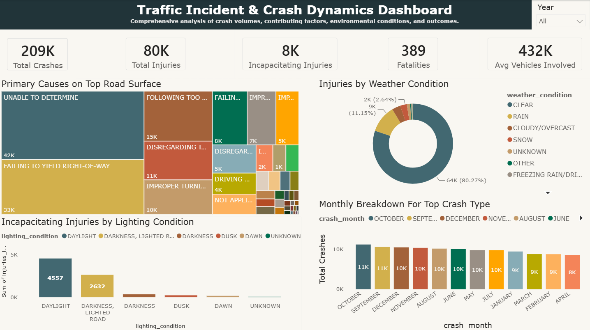
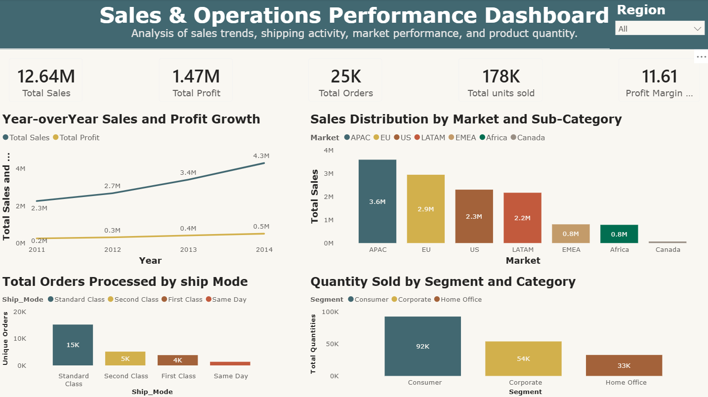

SQL
Data cleaning, querying, aggregation, joins, CTEs, and exploratory analysis.
Data cleaning, querying, aggregation, joins, CTEs, and exploratory analysis.
Data cleaning, exploratory analysis, statistical summaries, and visualization using pandas and Matplotlib.
Data modeling, interactive dashboards, KPI reporting, and data visualization.
Data cleaning, standardization, pivot tables, formulas, analysis, and reporting.

Analysis of 209,275 cleaned traffic accident records to investigate injury patterns, road conditions, contributing causes, and crash trends.

Analysis of sales growth, profitability, market performance, shipping activity, and product quantity across the Global Superstore dataset.
Analysis of financial transactions, expenditure, income, payment methods, and geographic transaction patterns.
Analysis of social media usage, addiction severity, mental well-being, age, gender, and behavioral characteristics.
Analysis of revenue, sales channels, product performance, returned and canceled transactions, and customer satisfaction.